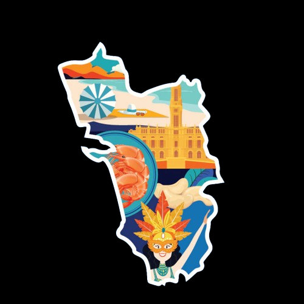

GOA

-
GOA is a state on the southwestern coast of India within the Konkan region, geographically separated from the Deccan highlands by the Western Ghats.It is bound by the Indian states of Maharashtra to the north, and Karnataka to the east and south, with the Arabian Sea in the west. It is India's smallest state by area and fourth-smallest by population. Goa has the highest GDP per capita among all Indian states,two and a half times as high as the GDP per capita of the country as a whole.
-
Panaji is the state's capital, while Vasco da Gama is its largest city. The historic city of Margão in Goa still exhibits the cultural influence of the Portuguese, who first voyaged to the subcontinent in the early 16th century as merchants, and conquered it soon thereafter, whereupon Goa became an overseas territory of the Portuguese Empire, part of what was then known as Portuguese India, and remained as such for about 456 years until it was annexed by India in 1961.
-
Goa is a part of the coastal country known as the Konkan, which is an escarpment rising up to the Western Ghats range of mountains, which separate it from the Deccan Plateau. The highest point is the Sonsogor Peak, with an altitude of 1,026 m (3,366 ft). Goa has a coastline of 160 km.Goa features a tropical monsoon climate under the Köppen climate classification. Goa, being in the torrid zone and near the Arabian Sea, has a hot and humid climate for most of the year.